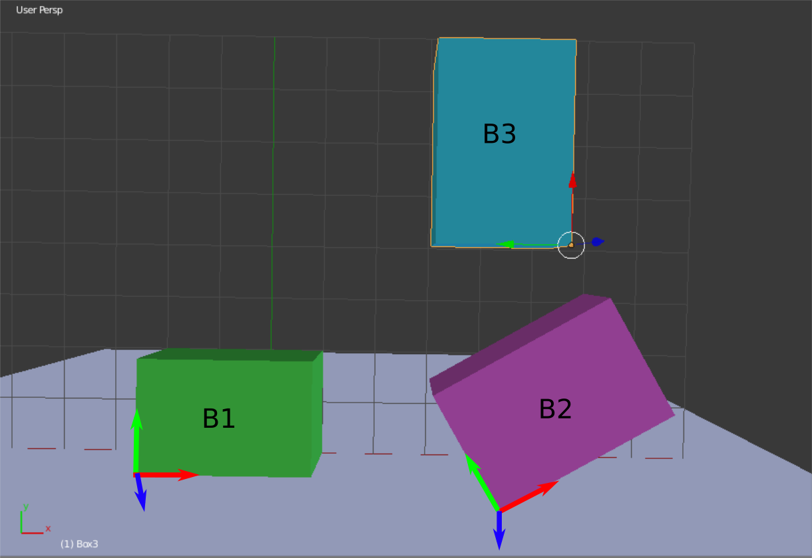

The goals of this lab are to
This is a two week assignment. It has many parts, so start early. After completing this assignment, you will have your first animated characters!
This assignment has been added to your AnimationToolkit repository. To get the source, run
> cd cs56/AnimationToolkit > git pull > cd build > cmake .. > make
You should now have a new directory under assignments called a6-characters.
For this question, implement AQuaternion::Slerp() in libsrc/animation/AQuaternion-basecode.cpp
To run the unit test from the build directory, type
build> ../bin/a6-testSlerp
To run the teapot demo from the build directory, type
build> ../bin/a6-slerpTeapot
In this question, you will implement a simple animation using splines for position and rotation.
Implement you solution in the file AKeyframeCone.cpp
Your solution should have the following features:
The ATransform class represents 4x4 homogeneous transforms as 2x2 block matrices. The transform's rotation \(R_j^i\) and translation \(d_j^i\) are public variables. Because the bottom row of such matrices are always known, we do not store them. Instead, we store the top left block as a rotation (e.g. AQuaternion) and the top right column as a vector.
Complete the implementation of the ATransform class in libsrc/animation/ATransform-basecode.cpp.
Returns a transform representing the inverse of this object.
Input 3D position to be transformed by this transform
Output Transformed position
Input 3D vector to be transformed by this transform
Output Transformed vector
Input The first transform t1 in the operation
Input The second transform t2
Output The resulting transform t1 * t2
To run tests from the build directory, type
build> ../bin/a6-testTransform
For this question, you will use the transform implementation from the previous section to position several boxes. Look at the code in assignments/a6-characters/boxes.cpp. You will need to modify it.
A room has three boxes in it. Each box has a local coordinate system attached to it. The lengths of all three boxes in the x,y, and z directions of their local coordinate frames are (3,2,1) respectively. The origin of each box is in the lower left-hand corner. The z-axis of each box is aligned with the global Z axis.
The position of B1 with respect to the world (e.g. coordinate system {X0,Y0,Z0}) is p1 = [-2 0 1]T.
The position of B2 with respect to the world is p2 = [4 0 2]T.
The position of B3 with respect to the world is p3 = [5 4 2]T.
Furthermore, with respect to the world coordinate system, B2 is rotated 45 degrees around Z0 and
B3 is rotated 90 degrees around Z0.

In your readme, writeup answers to the following questions in terms of algebraic expressions in terms
of rotations and displacement vectors. Then, implement you answers in boxes.cpp to check your
work.
To run the demo from the build directory, type
build> ../bin/a6-boxes
In this question, you were learn about the ASkeleton and AJoint classes in your basecode.
Read the header files for ASkeleton and AJoint in libsrc/animation/ASkeleton.h and libsrc/animation/AJoint.h and then complete the program in assignments/a6-character/ASkeletonPractive.cpp This file loads a BVH file and prints information about the character in it. For more details, read below.
To run the demo from the build directory, type
build> ../bin/a6-skeleton
The term scene graph, or hierachy, is typically used to organize all the transforms in a scene. A skeleton is a sub-tree of the scene graph, which represents a single character. Your base code already includes a class for managing skeletons in ASkeleton in libsrc/animation/ASkeleton.h. In this question, you will read the ASkeleton class, answer questions, and write a small program to understand how it works.
In your SceneGraph, you created nodes to hold each transform. In the basecode, the nodes correspond to AJoint in libsrc/animation/AJoint.h Each joint has a unique ID (unsigned integer), name, pointer to its parent joint, and a list of children. The root joint has ID zero and a NULL parent. The skeleton contains a pointer to the root joint.
Joints are implemented in the AJoint class. AJoint stores a transformation from its own coordinate frame to its parent in its local2parent transform. This transform contains the offset from the parent in LocalTranslation and the relative rotation from the parent in LocalRotation. In this assignment, you will implement a recursive forward kinematics algorithm which will compute the joint's local2global transformations
You can create characters from scratch using the methods in ASkeleton and AJoint. However, we
usually load characters (and motion) from a file. Your basecode supports a file format called
BVH. The first part of the file contains the hierachy of joints and the second part
contains root positions and joint orientations to use for animation. A BVH reader is defined in
the class ABVHReader in libsrc/animation/ABVHReader.cpp
In this question, you will implement forward kinematics algorithm in ASkeleton::fk and AJoint::fk.
Forward kinematics (FK) is the process of computing the global positions for the end effectors. The basecode assumes that we will implement FK recursively, starting at the root joint and then propagating down to each end effector (e.g. hands, feet, head, tail, etc)
AJoint::fk() if "I am the root joint" compute local2global base case else compute local2global from parent call fk for each childPart 2: Create a skeleton to represent the tentacle (2 points)
After implementing forward kinematics, you will have global positions and rotations for each segment of the tentacle. This will allow us to draw the tentacle using the following algorithm (note: this has been implemented for you)
for each joint if the joint is the root continue p1 = global position of the parent joint p2 = global position of the joint draw a limb between p1 and p2

Use sine to animate each joint of the tentacle.

Option 1 (2 points) Create a cool demo using splines and unique characters. Or
create a scene with many characters!
Be sure to include a video of your demo for full credit!